Urakawa
Urakawa · Hokkaido
Urakawa
Highlighted on the Hokkaido map.
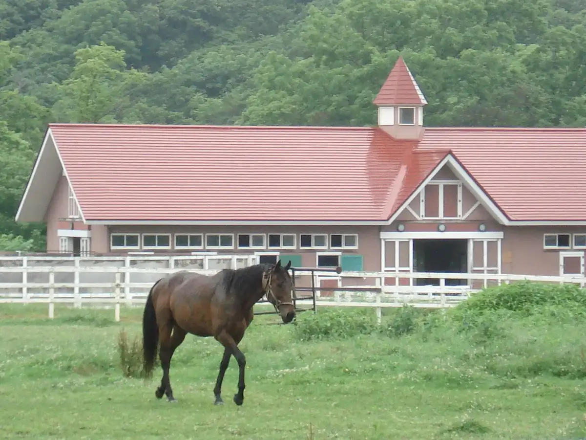
Stay
浦河イン
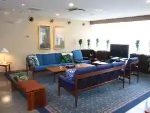
Urakawa In
浦河ウエリントンホテル
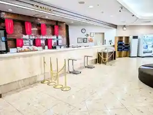
Urakawa Uerintonhoteru
ゲストハウス まさご
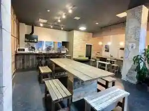
Gesutohausu Masago
ホースヴィレッジペンション馬の宿
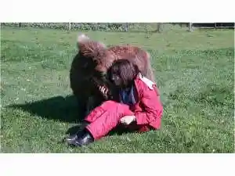
Hoosuvirejjipenshon Uma No Yado
うらかわ優駿ビレッジAERU(アエル)
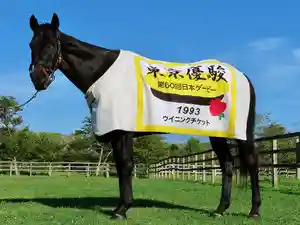
Urakawa Yuushun Birejji Aeru( Aeru )
Dining
エヤム
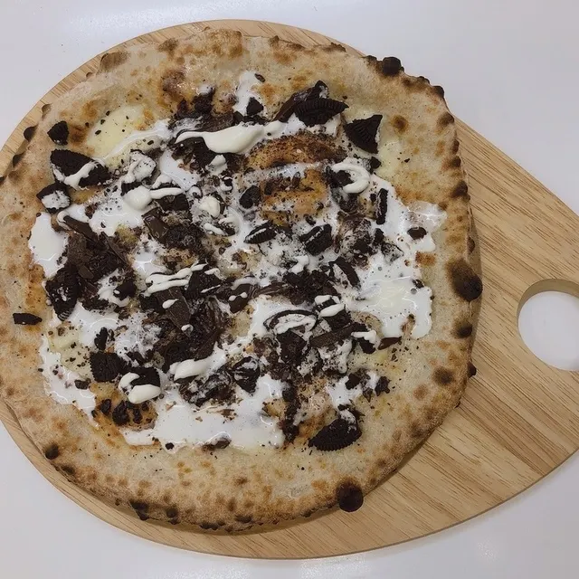
Eyamu
きむら旅館

Kimura Ryokan
キッチン工房 さゆき
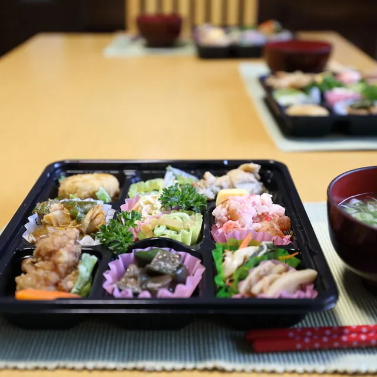
Kitchin Koubou Sayuki
綺羅々亭
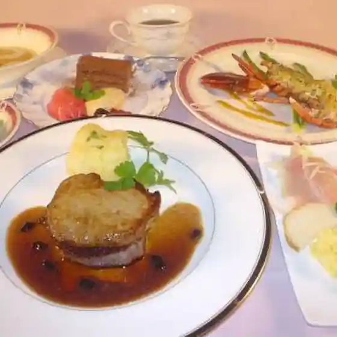
Kira (Kurikaesi) Tei
味処 三之助
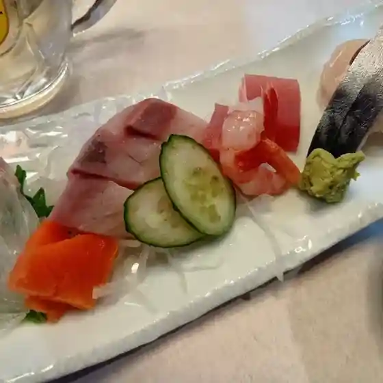
Ajidokoro Sannosuke
たこ福
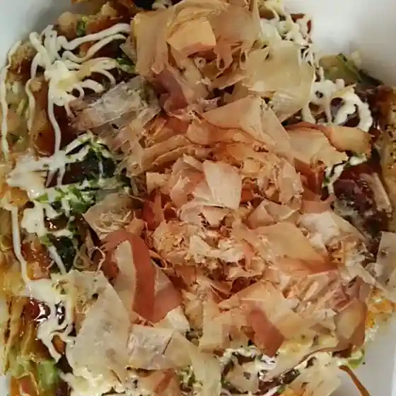
Tako Fuku
そばの味よし
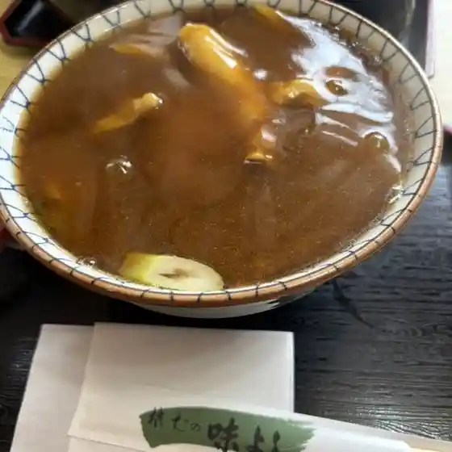
Sobano Aji Yoshi
つぼ八 浦河店
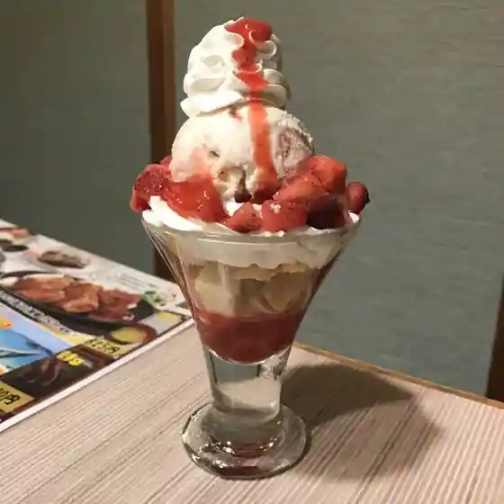
Tsubo Hachi Urakawa Mise
食事の店 千成
Shokuji No Mise Sennari
船越谷水産
Funakoshi Tanimizu San
うどん ちとせ
Udon Chitose
串八
Kushi Hachi
CO・CO・A
Co Co A
鮨 かわ
Sushi Kawa
長寿庵
Chouju Iori
やなぎ
Yanagi
BHARAT RESTAURANT
Bharat Restaurant
まるしん給酒所
Marushin Kyuu Sake Tokoro
助六
Sukeroku
ラピラータ
Rapiraata
味の鳥
Aji No Tori
あとりえ ぶぅ
Atorie Buu
cafe 蓮
Cafe Hasu
焼肉 だんく
Yakiniku Danku